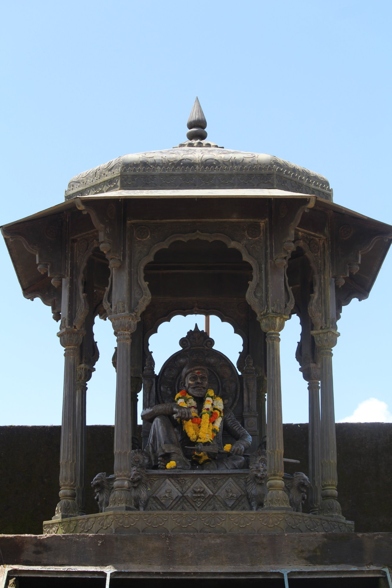

What is Raigad Fort?
Raigad Fort, historically known as Rairi, is a hill fort situated on a sheer plateau deep within the Sahyadri mountain range of Maharashtra. Standing 820 metres above sea level, the fort is enclosed on all sides by near-vertical cliffs, making it one of the most naturally fortified locations in the Deccan region. The complex once contained a royal palace, a coronation hall, a market street, temples, barracks, and large water cisterns — functioning as a complete city in the sky.
The fort was originally built around 1030 CE and changed hands among local rulers over the centuries. It was Chhatrapati Shivaji Maharaj who recognised its strategic importance and had it extensively rebuilt between 1656 and 1674 CE, ultimately making it the capital of the Maratha Empire.
Location and History
The fort is located in the Raigad district of Maharashtra, approximately 25 kilometres from Mahad and around 170 kilometres south of Mumbai. It sits within dense Sahyadri forests and is accessible today either by a ropeway or by climbing 1,737 stone steps carved into the hillside — a route that clearly illustrates why no enemy could easily approach or storm the fort.
The fort's most significant chapter began on 6 June 1674, when Shivaji Maharaj was crowned Chhatrapati — sovereign king — in a ceremony attended by thousands. This coronation was a defining moment in Indian history, formally establishing the Maratha people as an independent political power. Raigad served as the imperial capital until 1689, when Mughal forces under Aurangzeb captured it after a prolonged siege.
Why is it Historically Important?
Raigad was the administrative heart of an empire that would eventually control much of the Indian subcontinent. From here, Chhatrapati Shivaji Maharaj governed a well-organised state with a strong navy, a merit-based revenue system, and a forward-thinking code of civil administration. The fort is also his final resting place — his samadhi stands within the complex and is visited by lakhs of people each year.
In the 19th century, freedom fighter Lokmanya Bal Gangadhar Tilak used Raigad as a symbol of national pride, reviving the celebration of Shivaji Jayanti here to inspire resistance against British colonial rule. Today the fort is protected by the Archaeological Survey of India and remains one of the most visited heritage sites in Maharashtra.
The Throne of Chhatrapati Shivaji Maharaj

Sinhasana — The Royal Throne of the Maratha Empire
The throne of Chhatrapati Shivaji Maharaj, known as the Sinhasana, stands at the heart of Raigad Fort's Rajsabha (royal court). It was here that Shivaji Maharaj was formally crowned on 6 June 1674, ascending as the sovereign ruler of the Maratha Empire in one of the most celebrated events in Indian history.
The throne is housed within an intricately carved octagonal stone pavilion supported by ornate pillars. The statue seen today — cast in bronze and adorned with marigold garlands by devotees — depicts Shivaji Maharaj seated in a composed, regal posture, symbolising his role as both a warrior king and a just administrator.
The pavilion's craftsmanship reflects the finest of 17th-century Maratha architecture — detailed floral carvings, multi-tiered arched entrances, and a domed roof crowned by a pointed finial. It remains one of the most revered monuments within the fort complex.
Key Facts
- The fort has 1,737 hand-carved stone steps leading from the base to the main entrance gate.
- The Maha Darwaja (Grand Gate) was built narrow to prevent enemy war elephants from entering.
- A modern ropeway covers the steep ascent in approximately 5 minutes with panoramic views.
- The fort once had a market street lined with over 300 shops, remains of which are still visible today.
- The coronation of Shivaji Maharaj on 6 June 1674 is observed as an official public holiday in Maharashtra.
- Large rainwater cisterns inside the fort could sustain the garrison through extended sieges.
- Raigad is classified as a Giri Durg — one of the most strategic fort types in Maratha military architecture.